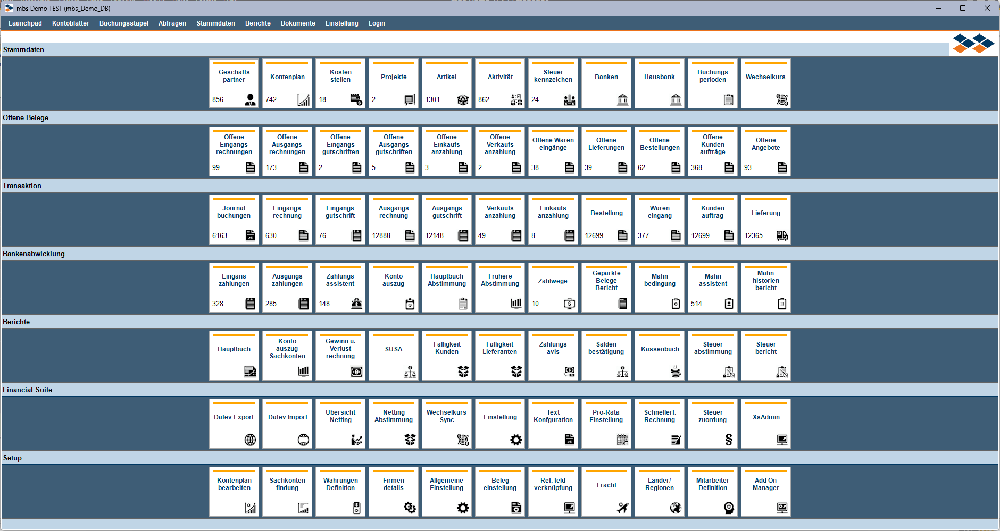
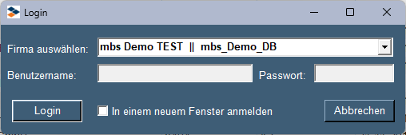

Cockpit (Cockpit)
Overview
The Versino Cockpit is the central dashboard of the Financial Suite and provides a comprehensive work environment for managing, analyzing, and entering postings. It runs as a standalone window parallel to SAP Business One and acts as a starting point and control center for many financial processes.
Access: You can access the Cockpit via Versino Financial Suite > Financial Cockpit. It automatically adopts your SAP B1 session and user rights.
Main Features
Home Page (Launchpad)
The home page is your personal dashboard with configurable tiles for quick access to the most important areas of SAP Business One, such as master data, open documents, transactions, reports, and Financial Suite functions.
Account Ledgers (Analyzing Existing Postings)
Under the "Account Ledgers" tab, you will find a powerful view of journal entries related to accounts/customers/vendors/daybook (DATEV). This is a pure analysis and read-only view that allows you to quickly filter, sort, and view details of existing postings with a double-click. No new postings can be created here.
Posting Batches (Quickly creating new journal entries)
Under the "Posting Batches" tab, you will find a separate tool designed specifically for the quick creation of new journal entries. It offers an input with intelligent automations:
- Automatic account type recognition (expense, revenue, etc.)
- Automatic tax assignment based on account master data
- Automatic gross/net calculation
Documents (Creating from parked documents)
Under the "Documents" tab, you will find a separate tool designed specifically for the creation of documents from parked documents.
- After selecting the rows, you can use the Continue to button to add or remove the parked documents.
- After creating the documents, you will receive a status message with all successful or failed documents.
- You will then be automatically redirected to the Documents tab, and all created documents will be displayed.
Login (Multi-company Function)
Under the "Login" tab, it is possible to log into another company database, either in the current window or in a new window.
Other Functions
The Cockpit also offers:
- Predefined Queries (BP Exempt | BP Liable | Dunning Block | Payment Block | A/P Invoice | Revenue / Country | Account / Tax).
- Reports (BWA | Trial Balance | Open Items Customers).
- Advanced query of Business Partner Master Data with direct editing capability via the context menu (right-click).
Tips and Troubleshooting
- Summation Tip: Select multiple rows with numeric values in any table. The sum of these values is automatically displayed when you hover over the column header.
- Login Tip: When changing company, you remain logged into the current B1 session. Also, there are no license limitations in the Cockpit (meaning a user can start more than two sessions).